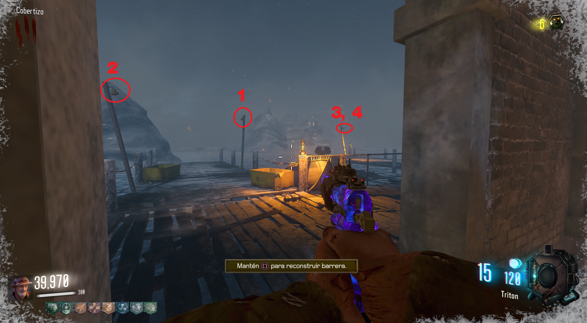

Reproducir canción
Para reproducir la canción deberemos de disparar a las campanas que se ven fuera de la cabaña de madera.
Primero a la del medio, después la de la izquierda y dos veces a la de la derecha.
